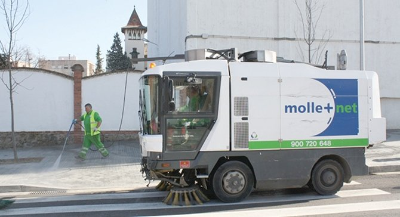
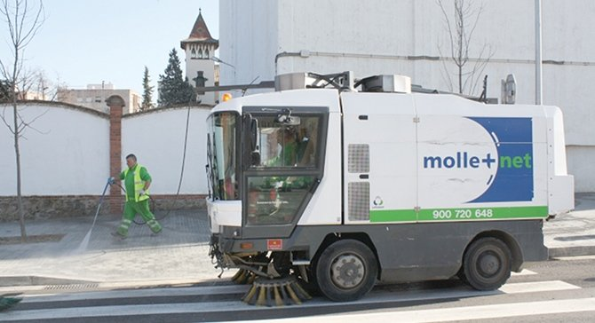
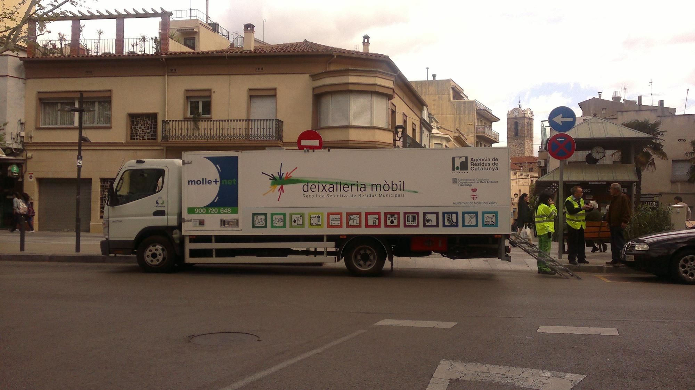

Evento de Limpieza de Espacios Públicos
Únete a nosotros el 15 de enero para limpiar nuestros parques y espacios públicos. ¡Tu participación es crucial para mantener nuestra ciudad limpia!

Únete a nosotros el 15 de enero para limpiar nuestros parques y espacios públicos. ¡Tu participación es crucial para mantener nuestra ciudad limpia!
Se ha inaugurado un nuevo punto de reciclaje en el centro de la ciudad para facilitar la separación de residuos. ¡Utiliza este servicio y contribuye al medio ambiente!
